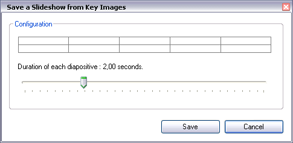

Saving Still Images
This article guides you through the following operations :
Saving the current image, Saving a Sequence of Images,
Saving a Diaporama of Key Images, Saving a PDF document of Key Images.
1. Saving the current image
Browse the video up to the image you want to save.
Click the Snapshot button : , to launch the save dialog.
2. Saving a Sequence of Images
A sequence of images is a set of frames extracted from the video at regular interval.
Use the Sequence snapshot button : , to launch the Sequence save dialog.
Using the frequency selector (indicated by the red arrow), choose the time interval between images export.
Click the "Save" button to choose the file name.
Images are automatically appended a suffix depending on their position in the video.
The suffix and format extension are automatically added during export. For example, to save to the following names :
image-001.jpg, image-002.jpg, image-003.jpg, etc.
you simply have to put "image" in the save dialog box.
The suffix format, however, depends on the general preferences.
Possible
formats are : Classic (hours, minutes, seconds, hundredth), Number of
images, Ten thousandth of hours, and hundredth of minutes.
(See also : General Preferences.)
You can also export only the Key Images using the "Export Key Images only".
In this case, all the Key Images will be exported, without taking into account the frequency specified.
3. Saving a Diaporama of the Key Images
A
Diaporama of the Key Images is a small animated movie in which Key
Images are visible one after the other during a given amount of time.
Use the diaporama button : , to launch the dialog box to save the diaporama.

With
the help of the duration control, specify the period of time during
which each Key Image will stay visible before switching to the next.
Drawings that you may have added to the Key Image will be blended.
To learn more about Key Images, refer to Handling Key Images.
4. Saving a PDF document of Key Images
Export Key Images to a PDF document, to ease printing or sharing.
Use the PDF button :  , to launch the save dialog.
, to launch the save dialog.
The page layout of the document is handled by Kinovea:
- Each Key Image is centered on its own page,
- Title and comments are added under the image.
To add a title and comments to a Key Image, use the comments button :  , from the Key Images toolbar.
, from the Key Images toolbar.
(See also Handling Key Images.)